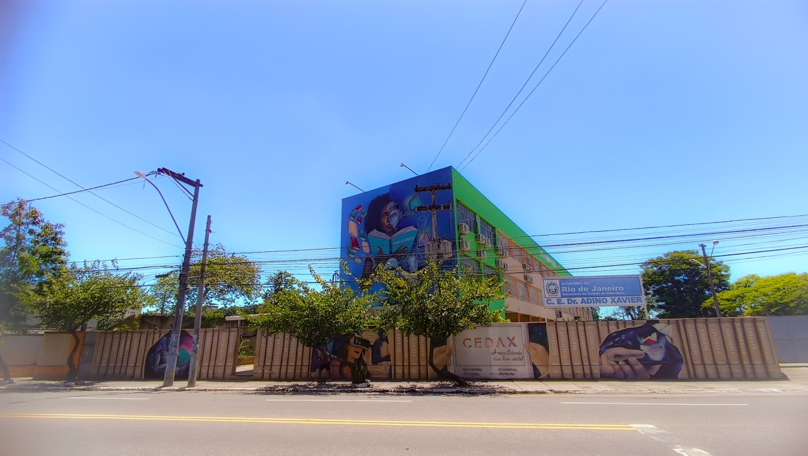

Sobre Nós
Fundado com o objetivo de oferecer educação de qualidade e formar cidadãos críticos e preparados para o futuro, o Colégio Estadual Doutor Adino Xavier é uma instituição do estado do Rio de Janeiro localizada no bairro de Mutondo em São Gonçalo. Nossa escola busca proporcionar uma educação inclusiva e transformadora, promovendo o desenvolvimento dos nossos alunos.

Com um corpo docente qualificado e dedicado, nosso colégio se destaca pela promoção de valores como respeito, responsabilidade e cidadania. Além do ensino tradicional, também incentivamos nossos estudantes a explorar novas áreas do conhecimento e a desenvolver habilidades essenciais para o mundo moderno, como o pensamento crítico e a tecnologia.
A missão do Colégio Estadual Doutor Adino Xavier é oferecer uma educação de excelência, que prepare nossos alunos não apenas para os desafios acadêmicos, mas também para serem protagonistas em suas vidas pessoais e profissionais. Acreditamos no poder da educação como ferramenta de transformação social, capaz de criar oportunidades e promover igualdade
Localizado no coração de São Gonçalo, nosso colégio possui uma infraestrutura adequada para garantir o melhor aprendizado dos nossos alunos. As salas de aula são espaçosas e bem equipadas, e contamos com quadra para aulas de Educação Física , além de uma biblioteca ampla para o suporte dos estudos.
Estamos comprometidos em formar estudantes preparados para o futuro, com uma visão ampla sobre o mundo e suas diversas oportunidades. Queremos que nossos alunos desenvolvam a capacidade de inovar e colaborar em uma sociedade cada vez mais globalizada e digital.